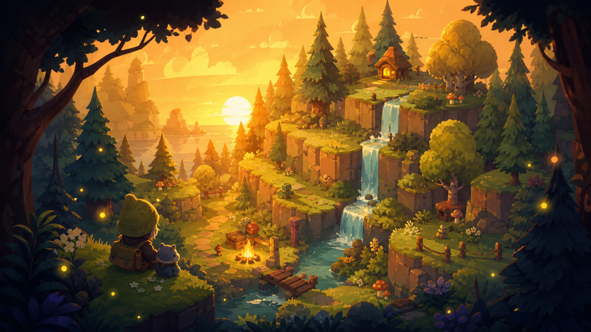

The world auto-saves in this browser. The camera is fixed — just enjoy the view. 🍃

a tiny hand-painted valley to call home
painting the valley…
WASD / arrows / left stick to walk · tap ground to go there · 🧱 build your cozy home
works great on iPad & touch screens · camera is fixed on purpose 🌿